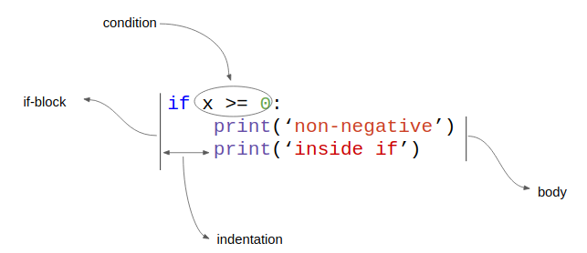
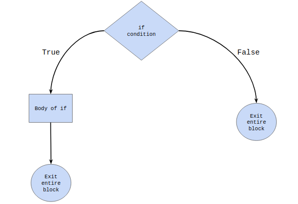
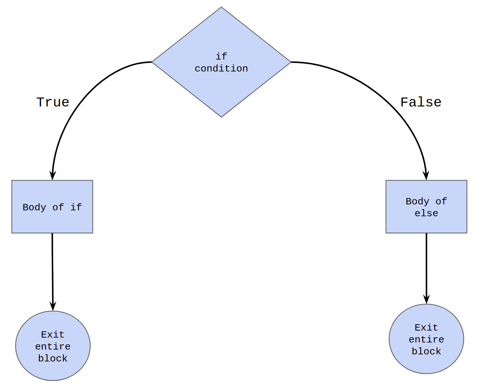
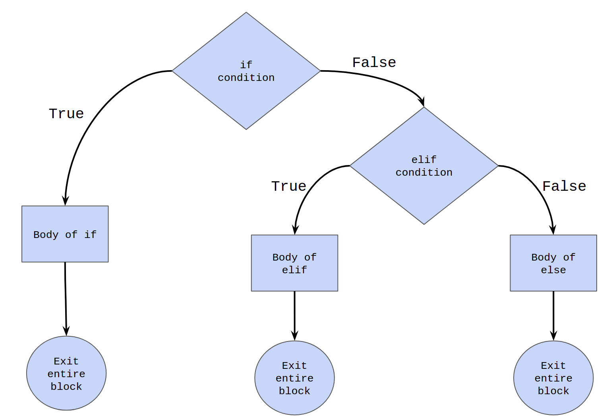

Home Lesson-2.5
Lesson-2.4
Lesson-2.4Conditional Statementsifif-elseif-elif-elseNested conditional statementsDefining variables inside ifActivity QuestionsFeedback
Conditional Statements
if
Let us explore the idea of conditional statements by solving a simple problem:
Problem: Accept an integer as input from the user. If the number is greater than or equal to zero, print:
non-negative.
Solution
xxxxxxxxxx31x = int(input())2if x >= 0:3 print('non-negative')if is a keyword in Python. The text adjacent to if is a boolean expression, usually called the if-condition or just the condition. Line-3 is the body of if. If the condition evaluates to True, then line-3 is executed. If it is False, then line-3 doesn't get executed. The following diagram captures the terms that have been introduced:

The control flow of the if-statement as a flow chart is given below:

Coming back to the code snippet:
xxxxxxxxxx31x = int(input())2if x >= 0:3 print('non-negative')Note that line-3 in the solution code is indented. In this case, the indentation corresponds to four spaces. It is very important to keep this consistent throughout the program. In all lessons, the first level of indentation will have four space . To understand how indentation works and why it is necessary, consider the following code blocks:
xxxxxxxxxx61# Left | # Right2x = 1 | x = -13if x >= 0: | if x >= 0:4 print('non-negative') | print('non-negative')5 print('inside if') | print('inside if')6print('outside if') | print('outside if')The output is:
xxxxxxxxxx31non-negative | outside if2inside if |3outside if |
Lines 3-5 in the code make up the if-block. Lines 4 and 5 which are indented make up the body of if. Whenever the if-condition evaluates to True, the interpreter enters the body of if and executes the lines sequentially. The indentation helps in separating the body of the if-block from the rest of the code.
Left: For the code on the left, the condition is True. So lines 4 and 5 are going to be executed. Once we exit the if-block, the interpreter will resume execution from line-6.
Right: For the code on the right, the condition is False. So, lines 4 and 5 are not going to be executed. The interpreter will skip the body of if and directly move to line-6.
if-else
Let us add one more level of complexity to the problem.
Problem
Accept an integer as input from the user. If the number is greater than or equal to zero, print:
non-negative. If the number is less than zero, printnegative.
Solution
xxxxxxxxxx51x = int(input())2if x >= 0:3 print('non-negative')4else:5 print('negative')else is a keyword in Python. When the if-condition evaluates to True, the statements inside the body of the if-block are evaluated. When the condition evaluates to False, the statements inside the body of the else-block are evaluated.
A visual representation of the control flow:

Points to remember:
ifandelseare at the same level of indentation.elsecan never occur independent of anifin conditional statements.elsecannot have any new condition associated with it.
The following code demonstrates the last two points:
xxxxxxxxxx121##### Alarm! Wrong code snippet #####2else:3 print(1)4##### Alarm! Wrong code snippet #####56##### Alarm! Wrong code snippet #####7x, y = 1, 28if x >= y:9 print(1)10else x < y:11 print(1)12##### Alarm! Wrong code snippet #####
if-elif-else
Time for another bump in the level of complexity:
Accept an integer as input from the user. If the number is greater than zero, print:
non-negative. If the number is less than zero, printnegative. If the number is equal to zero, printzero.
xxxxxxxxxx81x = int(input())2if x > 0:3 print('non-negative')4elif x == 0:5 print('zero')6else:7 print('negative')8# End of codeelif is a keyword in Python. It is a shorthand for else-if.
To understand how this works, let us consider three different inputs and the corresponding outputs.
| Input | Output |
|---|---|
| x = 1 | non-negative |
| x = 0 | zero |
| x = -1 | negative |
The entire if-elif-else block has three sub-blocks in it:
- if-block: lines 2-3
- elif-block: lines 4-5
- else-block: lines 6-7
This is the process followed by the interpreter in executing the if-elif-else block:
- If the if-condition evaluates to
True, line-3 is executed and the control transfers to line-8. - If the if-condition evaluates to
False, the control transfers to the elif-block. If the elif-condition evaluates toTrue, then line-5 is executed and the control transfers to line-8. - If the elif-condition is
False, the control transfers to the else-block and line-7 is executed. As there are no more conditions to check, control naturally transfers to line-8.
A visual representation of the process is given below:

The general syntax:
xxxxxxxxxx61if <condition-1>:2 <statement-1>3elif <condition-2>:4 <statement-2>5else:6 <statement-3>Some features to note:
- Exactly one of the three statements gets executed.
- The moment either an
ifor anelifcondition evaluates toTrue, the body of that block is executed and the flow exits out of the entireif-elif-elseblock. - There could be multiple
elifconditions after theif. - An
elsecondition cannot come before anelif. The finalelseblock is not mandatory and can be removed. If theelseis present, it can only come at the end.
Nested conditional statements
Consider the following problem:
Accept three distinct integers as input from the user. If the numbers have been entered in ascending order, print
in ascending order. If not, printnot in ascending order.
An incomplete solution is given below:
xxxxxxxxxx91# Incomplete solution2x = int(input())3y = int(input())4z = int(input())56if x < y:7 print('in ascending order')8else:9 print('not in ascending order')The problem with the above solution is that it doesn't check if y < z. So, for an input like x, y, z = 1, 3, 2, it will print in ascending order, which is incorrect. The complete solution is given below:
xxxxxxxxxx111x = int(input())2y = int(input())3z = int(input())45if x < y:6 if y < z:7 print('in ascending order')8 else:9 print('not in ascending order')10else:11 print('not in ascending order')Whenever a new if-block is introduced, its body should have exactly one level of indentation with respect to the if-condition. Since line-7 makes up the body of the if-condition at line-6, it has one level of indentation with respect to line-6. However, line-6 is already at the first level of indentation with respect to line-5, so line-7 has two levels of indentation with respect to line-5. According to the convention we have chosen, two levels of indentation will correspond to eight spaces.
Having a conditional statement inside another conditional statement is called nesting. The if-block from lines 5-9 forms the outer block. The if-else block from lines 6-9 forms the inner block. The else in line-8 is paired with the if in line-6 as they are at the same level of indentation. For similar reasons, the else in line-10 is paired with the if in line-5.
Defining variables inside if
Consider the following snippet of code:
xxxxxxxxxx41x = int(input())2if x % 5 == 0:3 output = 'the number is divisible by 5'4print(output)Run the code multiple times, varying the input each time. What do you observe?
Whenever the input is a multiple of 5, the code runs without any error. When the input is not divisible by 5, the code throws a NameError. This is because, we are trying to reference a variable that has not been defined. The variable output is created only if line-3 is executed during run-time. Its mere presence in the code is not enough.
Activity Questions
- Assume that
xis a variable that has already been defined. Will this code ever printsecond?
xxxxxxxxxx41if True:2 print('first')3else:4 print('second')- What is the difference between the two snippets shown here? Are they functionally equivalent?
xxxxxxxxxx41# Left | # Right2x = True | x = True3if x == True: | if x:4 print('works') | print('works')- What is wrong with the following piece of code? If there are errors, modify the code so that it becomes error-free. What is this code trying to do?
xxxxxxxxxx71x = input()2if x % 10 == 0:3 print('multiple of 10')4else:5 print('neither a multiple of 5 nor a multiple of 10')6elif (x % 5 == 0) and (x % 10 != 0):7 print('multiple of 5 and not a multiple of 10')- What is the following code trying to do? The idea is to take the help of the variable names and the rest of the code to figure out what is happening.
xxxxxxxxxx51year = int(input())2if year % 4 == 0:3 print('leap')4else:5 print('non-leap')- The following code accepts three sides of a triangle as input from the user and determines if the triangle is equilateral, isosceles or scalene. Assume that all three sides of the triangle are integers. Is something wrong with the code?
xxxxxxxxxx91x, y, z = int(input()), int(input()), int(input())2if x == y and y == z and x == z:3 print('equilateral')4elif x == y and x != z:5 print('isosceles')6elif x == z and x != y:7 print('isosceles')8else:9 print('scalene')- Accept an integer
xas input from the user. If the number is even, printeven. If the number is odd, printodd. - Accept an integer
xas input from the user and print the last digit of the number in English. Use the following table for reference.
| Last digit of x | |
|---|---|
| 0 | zero |
| 1 | one |
| 9 | nine |
- Accept three integers as input from the user. Print
good tripletif one of the three numbers is the sum of the other two, andbad tripletotherwise. - Accept three non-negative real numbers as input from the user. If the three numbers form the sides of a triangle, print
True. If not, printFalse. - Accept four distinct integers as input from the user. Print
in ascending orderif the four numbers have been entered in ascending order, and printnot in ascending orderotherwise.
Feedback
Please fill this form. This feedback will help us make the lessons better.
xxxxxxxxxx11Lesson number = 2.4